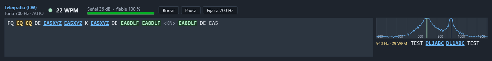
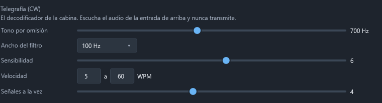

Telegrafía (CW)
El panel Telegrafía (CW) de Operar › Cabina lee la telegrafía que se oye por el equipo y la escribe en pantalla, con su velocidad y su tono. El decodificador es del propio programa: no hace falta fldigi, CW Skimmer ni ningún otro programa.


Solo escucha. El panel no transmite ni manda nada al equipo: del CAT lee el modo y el tono de telegrafía (pitch), y nada más.
Cuándo sale
- Solo, en cuanto el equipo pasa a CW (lo dice el CAT).
- A mano, con el botón CW de la derecha de la barra del equipo, en cualquier modo: sirve para leer telegrafía en un receptor que no habla CAT o con el equipo en otro modo. Ocultar lo vuelve a quitar.
Mientras se ve y no está en pausa, escucha el audio de la entrada elegida en Configuración › Audio y digitales (el codec USB del FT-710). Si esa entrada está cerrada, el panel ofrece Escuchar, que la abre sin tocar la radio. El audio se comparte: el módem digital y la fonía pueden estar escuchando a la vez.
Qué enseña
- Tono de la señal que se lee y si está en AUTO (lo busca solo) o FIJO.
- La luz que se enciende con cada punto y raya: si parpadea al ritmo de lo que se oye, el decodificador está bien enganchado.
- WPM: la velocidad, en palabras por minuto. Sigue los cambios y la mano de quien manipula (rayas largas, espacios cortos…), de 5 a 60 WPM.
- Señal en dB sobre el ruido y fiable: cuánto se parecen los tiempos a los de la telegrafía. Por debajo de unos 10 dB de señal el texto empieza a tener errores.
- El texto en vivo. Se desplaza solo mientras se está abajo; si sube para releer algo, se queda donde está.
Indicativos, CQ y el indicativo propio
- Los indicativos salen subrayados: un clic lo pasa al «Contacto nuevo», igual que un anuncio del cluster.
- CQ (y QRZ?) sale resaltado en ámbar: alguien está llamando.
- Su indicativo (el del perfil de estación activo) sale resaltado en verde: le están llamando a usted.
- Los prosignos salen entre ángulos:
<AR>,<SK>,<BT>,<KN>,<AS>…
El decodificador conoce las letras, los números, la puntuación, los prosignos y los caracteres europeos (Ñ, À, Ä, É, Ö, Ü, CH…).
El mini espectro
A la derecha, el audio de 200 a 1300 Hz:
- la raya verde es la señal que se está leyendo arriba;
- las rayas ámbar, las demás señales que se leen a la vez, cada una con su línea debajo (tono, velocidad y lo último que ha dicho);
- un clic en el espectro fija el tono en ese punto. Es la forma de elegir una señal débil que tiene otra más fuerte al lado.
Los botones
- Borrar limpia el texto.
- Pausa deja de escuchar sin cerrar el panel; Seguir vuelve.
- Fijar a … Hz fija el tono al pitch del equipo (el tono de CW que tiene puesto la radio; en el FT-710, CW PITCH). Si el CAT no lo da, se fija al tono que tenga ahora. Con el tono fijo, el botón pasa a Auto, que vuelve a buscarlo solo.
En automático, el panel se va a la señal más fuerte entre 300 y 1200 Hz y la sigue si deriva; solo cambia a otra cuando la que tenía lleva un rato callada.
El ruido no escribe
El texto no sale hasta que se reconocen varios caracteres seguidos con tiempos de telegrafía. Así el ruido de la banda, los pitidos y las portadoras no escriben basura. Lo que se leyó mientras tanto no se pierde: sale de golpe en cuanto se engancha.
Ajustes
En Configuración › Audio y digitales, apartado Telegrafía (CW):


- Tono por omisión: con el que arranca antes de encontrar una señal (700 Hz de fábrica).
- Ancho del filtro: 100 Hz va bien casi siempre. Más estrecho saca señales más débiles y aparta mejor a los vecinos, pero sigue peor las velocidades altas.
- Sensibilidad (1 a 10): más alta lee señales más débiles. El ruido no escribe con ninguna.
- Velocidad: las que se siguen, de 5 a 60 WPM. Acotarlas evita confundir una señal lenta con otra rápida.
- Señales a la vez: además de la principal, cuántas más se leen (el «skimmer»). Con 1, solo la principal.
Pulse Guardar: el panel toma los ajustes nuevos en el acto.
Cuánto lee
Medido con telegrafía sintética sobre ruido blanco (las cifras completas están en tests/Nodisla.Cuaderno.Modos.Pruebas/Banco/resultados-cw.md), con la relación señal-ruido en 500 Hz, que es la habitual en telegrafía:
| Señal (S/R en 500 Hz) | 12 WPM | 20 WPM | 30 WPM | 40 WPM |
|---|---|---|---|---|
| +17 dB | 3 % | 2 % | 2 % | 3 % |
| +7 dB | 2 % | 2 % | 2 % | 4 % |
| +3 dB | 2 % | 4 % | 7 % | 29 % |
| +1 dB | 5 % | 32 % | 34 % | 49 % |
(Errores de carácter.) Con una mano humana irregular, a +7 dB, uno de cada diez caracteres sale mal; con otra señal más fuerte a 150 Hz, el tono fijado la aparta y sale el 98 % bien. Con desvanecimientos profundos (QSB de 15 dB) se pierde lo que cae en el fondo de cada bajón.